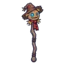

หุ่นไล่กาผีสิง
มอนธาตุดิน Lv 7–22
เจอที่
| แมพ | โซน | Lv | ภูมิภาค |
|---|---|---|---|
| ทุ่งหญ้าแสงจันทร์ | 12–18 | ป่ากองไฟ | |
| ไร่ฟักทอง | ไร่ข้าวโพด | 7–10 | ป่ากองไฟ |
| เขาวงกตข้าวโพด | 12–18 | ป่ากองไฟ | |
| เขาวงกตข้าวโพด | ลานหุ่นไล่กายักษ์ | 17–18 | ป่ากองไฟ |
| สนามรบเก่ากลางทุ่ง | 16–22 | ป่ากองไฟ | |
| ไร่แตงโมใต้จันทร์ | แตงโมยักษ์ผ่าซีก | 9–10 | ป่ากองไฟ |
| ลานกังหันสูบน้ำ | ใต้กังหันสูบน้ำ | 9–10 | ป่ากองไฟ |
| โรงบ่มฟักทองร้าง | กองฟักทองแกะสลัก | 9–10 | ป่ากองไฟ |
| เนินแอปเปิลป่า | 10–18 | ป่ากองไฟ | |
| เนินแอปเปิลป่า | ต้นแอปเปิลชิงช้าขาด | 16–18 | ป่ากองไฟ |
| ทุ่งดอกแดนดิไลออนยักษ์ | 10–18 | ป่ากองไฟ | |
| ทุ่งดอกแดนดิไลออนยักษ์ | ดอกแดนดิไลออนยักษ์ | 16–18 | ป่ากองไฟ |
| สวนรังผึ้งร้าง | 10–18 | ป่ากองไฟ | |
| สวนรังผึ้งร้าง | ต้นไม้รวงผึ้งยักษ์ | 16–18 | ป่ากองไฟ |
ค่าสถานะตามเลเวล
| Lv | HP | ATK | DEF | MDEF | EXP | Job |
|---|---|---|---|---|---|---|
| 7 | 844 | 17–26 | 3 | 1 | 14 | 11 |
| 14 | 1,736 | 29–44 | 5 | 3 | 21 | 16 |
| 22 | 2,231 | 37–55 | 8 | 4 | 30 | 23 |
ตีด้วยธาตุไหนดี
แรงขึ้น: ไฟ ×1.5 พิษ ×1.25
เบาลง: ลม ×0.5 ดิน ×0.25
วัตถุดิบที่ดรอป
| ของ | โอกาส | |
|---|---|---|
| ฟางต้องสาป | 60% | 1 ชิ้น (15% ได้ 2) |
อุปกรณ์ที่ดรอป (10)
| ของ | โอกาส |
|---|---|
| 0.25% | |
| 0.25% | |
| 0.25% | |
| 0.12% | |
| 0.12% | |
| 0.12% | |
| 0.12% | |
| 0.06% | |
| 0.06% | |
 คทาหุ่นไล่กาผีสิง | 0.06% |
สกิล
หลบ (Lv 25+) · หลบ (Lv 60+) · วาร์ป (Lv 60+)